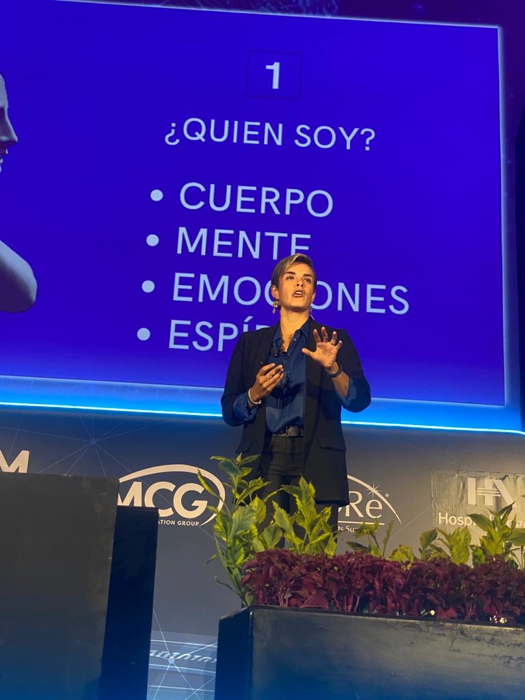

Incertidumbre
Equipos que sienten que la IA amenaza su lugar en lugar de ampliarlo.
Nueva conferencia para empresas
Tus líderes salen con un plan claro de qué delegar a la IA, qué potenciar y qué capacidades humanas proteger.

Audiencias en más de 50 países. Empresas y medios que han confiado en mí:
Equipos que sienten que la IA amenaza su lugar en lugar de ampliarlo.
Líderes formados para otra época, frente a decisiones que nadie había tomado antes.
Más velocidad y más presión, sin herramientas para sostener el enfoque y la energía.
Cómo funciona
Durante la sesión, tus líderes usan una herramienta digital en vivo para identificar qué tareas delegar a la IA, qué potenciar y qué capacidades humanas proteger. Salen con un plan claro y aplicable.
Soy conferencista, coach y fundadora de Extraordinario Academy. Me especializo en Ciencias de la Felicidad y Bio-Inteligencia Estratégica, y desde mi metodología Mindset 360 acompaño a organizaciones a transformar la forma en que sus líderes piensan, deciden y cuidan a su gente.
Conocer mi historia“El liderazgo decidirá qué hacemos con la capacidad que nos devuelve la inteligencia artificial.”
Karla LaraEscucha la serie
Una serie de 10 episodios donde presento las ideas centrales de mi propuesta para liderar en la era de la inteligencia artificial.
En construcción¿Tienes otra duda sobre tu evento? Escríbeme por WhatsApp
No. No es un taller de herramientas ni de prompts. Está diseñada para desarrollar el criterio con el que tus líderes deciden qué delegar a la IA, qué potenciar y qué capacidades humanas proteger.
Puede ser presencial o remota, con la misma experiencia interactiva. La duración base es de 60 minutos y se ajusta a la agenda de tu evento.
Cada participante entra desde su celular con un enlace. En la sede solo se necesita un proyector y un micrófono lavalier o de diadema.
Para grupos de 20 a 300 participantes.
La inversión depende del formato, la sede y el tamaño de la audiencia. Escríbeme y te envío una propuesta a la medida.
Hablemos de tu evento
Cuéntame sobre tu evento y te confirmo disponibilidad con una propuesta a la medida.
O escríbeme por WhatsApp